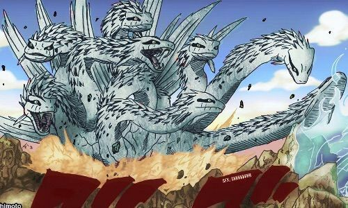

The White Anaconda
The White Anaconda is the arch nemesis of Kōjōman, he attacks his opponents with venomous bites, his ultimate
offensive technique is the eight branch technique an ability which allows him to transform into a massive eight
headed snake - causing him to transcend from a Snake to Dragon God, with him appearing inside the mouth of the
primary snake head.
Lair of the White Anaconda
- The white Anaconda can be found anywhere near Konohagakure forest
- Once reached there, try to search nearby swamps, marshes,large trees or any nearby wet places
- Since it is always hungry check nearby its preys, its preys include deer, large rodents and aquatic animals
The White Anaconda transformed into a massive eight
headed snake

Navigate to Home